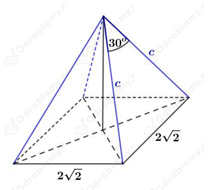
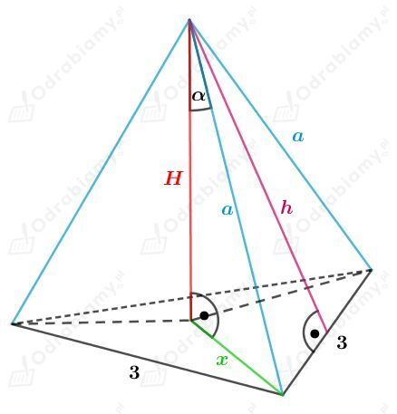
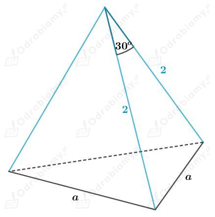
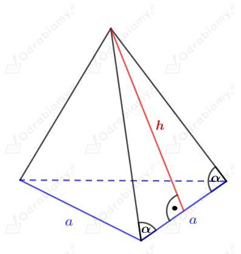
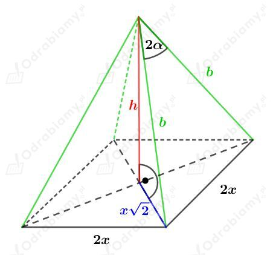
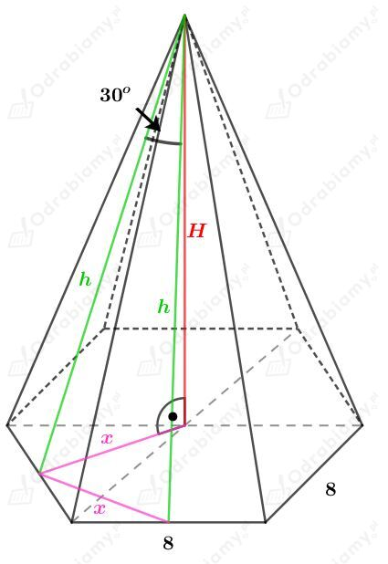
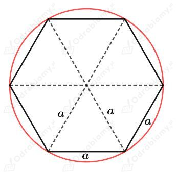
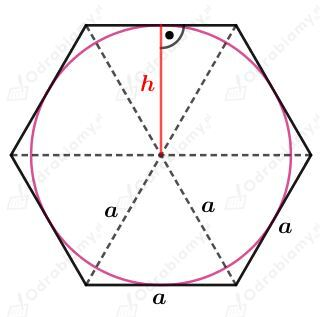
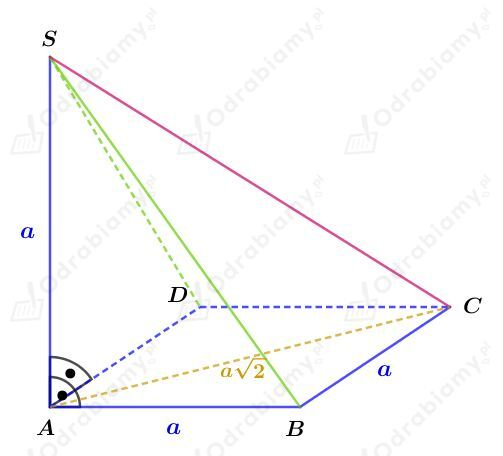
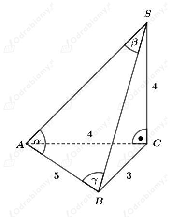

Rysunek:
Wiedząc, że
mamy
Korzystając z twierdzenia Pitagorasa mamy:
A zatem
Stąd wiemy, że podstawą tego ostrosłupa jest kwadrat o boku długości 10 cm.
Wyznaczmy pole powierzchni całkowitej tego ostrosłupa. Mamy:
Wiemy, że pole powierzchni podstawy tego ostrosłupa prawidłowego czworokątnego wynosi 8 cm2.
Zatem długość krawędzi podstawy wynosi
Rysunek:

Zauważmy, że wszystkie krawędzie boczne są tej samej długości, więc każda ściana boczna jest trójkątem równoramiennym.
Korzystając z twierdzenia cosinusów mamy:
Usuwając niewymierność z mianownika mamy:
Wyznaczmy pole powierzchni całkowitej tego ostrosłupa. Mamy:
Rysunek:

Długość odcinka x stanowi 2/3 długości wysokości podstawy, czyli 2/3 długości wysokości trójkąta równobocznego o boku długości 3 cm.
Korzystając ze wzoru na długość wysokości trójkąta równobocznego mamy:
Wiedząc, że
mamy
Korzystając z twierdzenia Pitagorasa otrzymujemy:
A stąd
Wyznaczmy pole powierzchni podstawy tego ostrosłupa. Korzystając ze wzoru na pole trójkąta równobocznego mamy:
Wyznaczmy długość wysokości h ściany bocznej. Korzystając z twierdzenia Pitagorasa mamy:
Obliczmy pole powierzchni bocznej. Mamy
Obliczmy pole powierzchni całkowitej. Mamy:
Rysunek:

Korzystając z twierdzenia cosinusów mamy:
Zauważmy, że pole powierzchni bocznej to pole trzech trójkątów równoramiennych o ramionach długości 2 i kącie o mierze 30o między tymi ramionami.
Wyznaczmy pole powierzchni całkowitej tego ostrosłupa. Pole składa się z pole podstawy - trójkąta równobocznego oraz trzech trójkątów równoramiennych. Skorzystamy ze wzoru na pole trójkąta równobocznego oraz w przypadku ścian ze wzoru
gdzie a i b to długości dwóch boków, a α to kąt zawarty między nimi. Mamy:
Rysunek:

Wyznaczmy tangens kąta 𝛼. Mamy:
Z treści zadania wiemy, że
Podstawiając wyznaczone h otrzymujemy:
Podstawiamy teraz wyznaczone a do zależności
i mamy:
Powierzchnia boczna tego ostrosłupa zbudowana jest z trzech trójkątów równoramiennych o podstawie długości a i wysokości długości h.
Wyznaczmy pole powierzchni bocznej tego ostrosłupa. Mamy:
Rysunek:

Korzystając z twierdzenia cosinusów (w ścianie bocznej ostrosłupa) mamy:
Długość krawędzi podstawy ostrosłupa prawidłowego czworokątnego oznaczyliśmy przez 2x, wówczas połowa przekątnej podstawy ma długość
Zauważmy, że wysokość h ostrosłupa tworzy z krawędzią boczną b i połową przekątnej podstawy x√2 trójkąt prostokątny.
Korzystając z twierdzenia Pitagorasa mamy:
Podstawiając wyznaczone wcześniej 2x2 z twierdzenia cosinusów mamy:
Wyznaczmy pole powierzchni bocznej tego ostrosłupa. Korzystając ze wzoru na pole trójkąta mamy:
Rysunek:

Z własności sześciokąta foremnego wiemy, że długość odcinka x jest długością wysokości trójkąta równobocznego o boku długości 8. Korzystając ze wzoru na długość wysokości w trójkącie równobocznym mamy:
Korzystając z twierdzenia cosinusów mamy:
Usuwając niewymierność z mianownika ułamka mamy:
Wyznaczmy długość wysokości H tego ostrosłupa. Korzystając z twierdzenia Pitagorasa mamy:
Wyznaczmy pole powierzchni podstawy. Korzystając ze wzoru na pole trójkąta równobocznego mamy:
Wyznaczmy pole powierzchni bocznej tego ostrosłupa. Mamy:
Wyznaczmy pole powierzchni całkowitej tego ostrosłupa. Mamy:
Podstawą ostrosłupa prawidłowego sześciokątnego jest sześciokąt foremny.
Każdy sześciokąt foremny o boku długości a można podzielić na sześć trójkątów równobocznych o boku długości a.
Promień koła opisanego na tym sześciokącie jest równy długości boku takiego trójkąta, ma więc długość a.
Rysunek:

Wyznaczmy pole koła opisanego na tym sześciokącie. Mamy:
Długość promień koła wpisanego w sześciokąt foremny jest równy długości wysokości jednego trójkąta równobocznego. Rysunek:

Wiemy, że
Wyznaczmy pole koła wpisanego na tym sześciokącie. Mamy:
Różnica między polem koła opisanego i koła wpisanego wynosi 8𝜋 cm2. Stąd otrzymujemy równanie:
Wyznaczmy pole powierzchni podstawy tego ostrosłupa. Korzystając ze wzoru na pole trójkąta równobocznego mamy:
Z treści zadania wiemy, że wysokość tego ostrosłupa ma długość 9 cm.
Wyznaczmy pole powierzchni bocznej. Mamy:
Wyznaczmy pole powierzchni całkowitej tego ostrosłupa. Mamy:
Rysunek:

Zauważmy, że trójkąty ABS i ADS to trójkąty prostokątne równoramienne, zatem
Trójkąt ACS jest trójkątem prostokątnym. Korzystając z twierdzenia Pitagorasa dla tego trójkąta mamy:
Rozważmy trójkąty BCS oraz CDS, których boki mają długości a, a√2, a√3. Zauważmy, że
Więc na mocy twierdzenia odwrotnego do twierdzenia Pitagorasa, trójkąty BCS oraz CDS są prostokątne.
Wyznaczmy pole powierzchni podstawy tego ostrosłupa. Mamy:
Wyznaczmy pole powierzchni bocznej tego ostrosłupa. Mamy:
Wyznaczmy pole powierzchni całkowitej tego ostrosłupa. Mamy:
Rysunek:

Trójkąt ACS jest prostokątnym trójkątem równoramiennym, zatem
Korzystając z twierdzenia Pitagorasa dla trójkąta BCS mamy:
Wyznaczmy wartość cos𝛼. Korzystając z twierdzenia cosinusów dla trójkąta ABS otrzymujemy:
Trójkąt ABS jest równoramienny, czyli
Wyznaczmy wartość cos𝛾. Korzystając z twierdzenia cosinusów dla trójkąta ABS otrzymujemy:
Podsumowując, otrzymaliśmy: